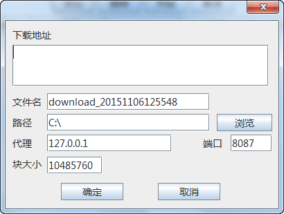
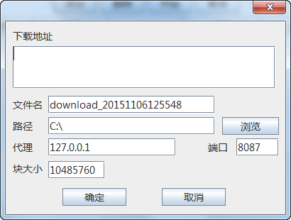

httpdownloader
A simple http download tool written in Java Swing(Support breakpoint transmission).
How to build
run
gradle jar
to generate executable JAR.
or
gradle distZip
to generate a zip distribution.
or
gradle installApp
to install into 'build/install'.
Screenshots
 
